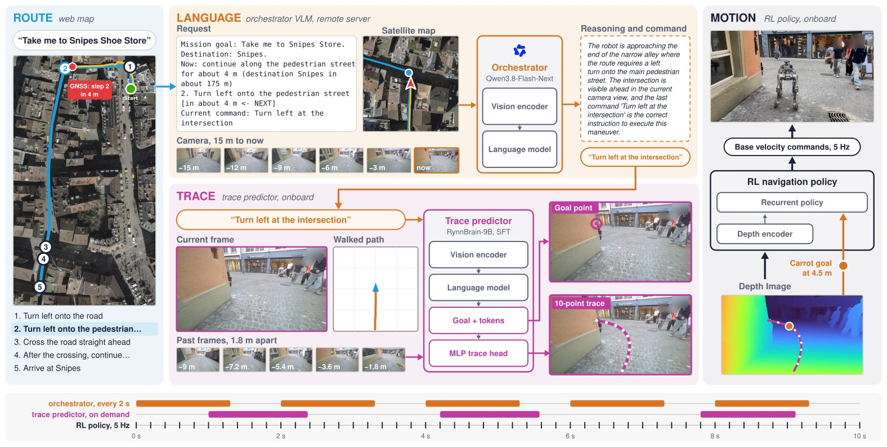
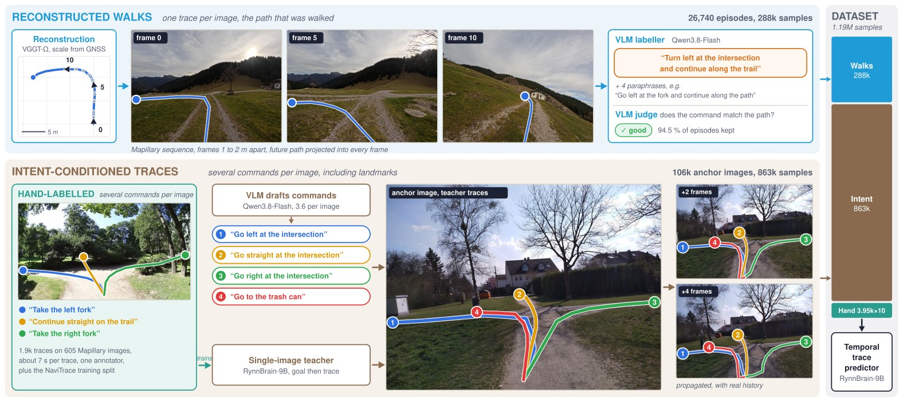

Each run is shown with the third-person view, the robot camera with the predicted trace, and every command and reasoning of the orchestrator. The videos run at 5× speed, slow to 2× at highlighted moments and show the arrival in real time. The video starts when the pointer first moves over the player; click a chapter or a marker to jump to it.
Short clips from the four missions, each with the command the orchestrator issued. Hover to play, click to enlarge. Each view shows four clips drawn at random; click a category, or the same one again, for others.


All numbers are from the paper. Hover a mark for its value, or open the table under each chart.
Give the trace predictor a street-level image and an atomic command, and it returns the goal point and the ten-point trace it would send to the robot.
@article{patel2026waytrace,
title = {WayTrace: A Map-to-Language-to-Trace Hierarchy for Embodied Urban Navigation},
author = {Patel, Manthan and Frey, Jonas and Roth, Pascal and Hutter, Marco and Cadena, Cesar},
journal = {arXiv preprint arXiv:2611.05129},
year = {2026}
}
The authors would like to thank Turcan Tuna for help with the state estimation and Claudio Bonaglia, Tim Tschanz and Cyril Püntener for help with the real-world deployments. This work was supported by the NVIDIA Academic Grant Program through the project Hierarchical Vision-Language Navigation Foundation Model. It was also supported as part of the Swiss AI Initiative by a grant from the Swiss National Supercomputing Centre (CSCS) under project ID abs19 on Alps, by the Luxembourg National Research Fund (Ref. 18990533) and by the Swiss National Science Foundation (SNSF) through projects No. 200021E_229503 and No. 227617.